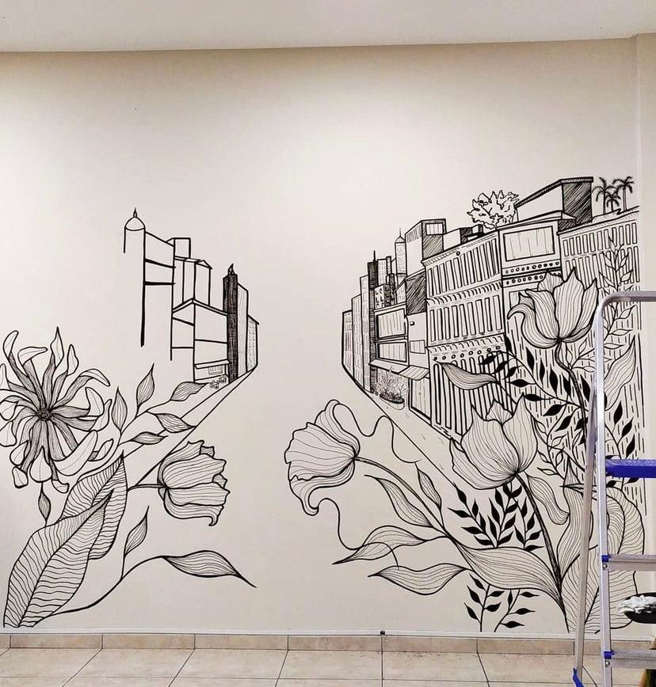

Ateliê Digital criado para conectar clientes interessados em prestaçõs de serviços artíticos personalizados e voltados para multiplataforma: internet, murais de empresas públicas ou privadas, ilustrações tradicionais ou digitais, logotipos, embalagens de produtos, desenhos de pets, entre outros.
Teve seu primeiro contato com a arte desde os 8 anos depois de seguir projetos de aulas livres na disciplina de Artes no colégio sempre fez da arte sua terapia e seu refúgio, mas com o passar dos anos deixou esse lado esquecido, na transição da adolescencia para a vida adulta. Entretanto se redescobriu artista voltando aos antigos hábitos de desenhar com grafite e qualquer folha de papel. Com o tempo, Geisa adquiriu técnicas em diferentes pilares da arte e começou a criar diversos projetos que envolvem pintura acrílica, design, muralismo, realismo colorido, entre outros.
Atualmente com 25 anos, Geisa é uma artista multidisciplinar, que além de projetos individuais, possui um ateliê num bairro periférico de Salvador.